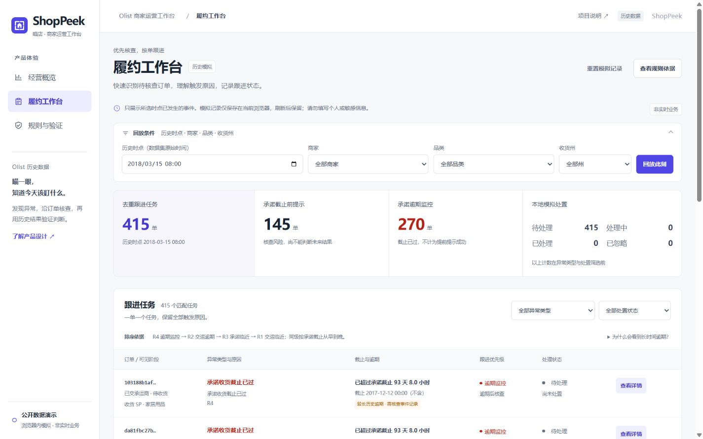

01 / 业务问题
看到晚收货比例之后，
运营还需要一个检查入口。
经营汇总能够描述异常，却不能直接回答“检查哪一单、为什么、下一步做什么”。ShopPeek 把经营分析、订单时间线、规则原因和模拟处置放到同一条路径。目标用户与工作流程仍是产品假设，尚未通过真实商家访谈验证。
第一步是统一数据粒度：订单、商品、付款和评价先按各自粒度处理，再关联，避免一对多连接放大订单与金额。业务发现窗口为 2017-01-01 至 2018-06-30；86,288 笔订单中，83,696 笔属于时间有效的已妥投样本。
| 收货范围 | 晚收货订单 | 有效妥投样本 | 晚收货率 |
|---|---|---|---|
| 全部州 | 5,930 | 83,696 | 7.09% |
| RJ | 1,436 | 10,891 | 13.19% |
| SP | 1,432 | 34,523 | 4.15% |
实际收货日期晚于承诺日期才记晚收货；同日按期。未收货、取消和时间无效订单不归为按期。
02 / 产品决策
用三个页面，
连起分析与跟进。
- 01
经营概览：从总体走向订单
保留日期、商家、品类和收货州筛选，结合月度趋势、地区对照与订单详情。商品金额归属匹配商品行，履约与评分仍是整单结果，不能直接拆成各商家的责任；商品金额不等于收入或利润。
查看经营概览 - 02
履约工作台：先展示触发依据
R1 / R2 检查交运截止，R3 / R4 检查承诺收货截止。每单一个任务，保留全部触发原因，展示当时可见的事件、截止与下一步核查建议。当前数据不足以支持包裹级归责。
核查一笔历史任务 - 03

03 / 验证与权衡
把覆盖率与核查负担，
放在同一张答卷里。
规则先冻结，再用 2018 年 7 月调试、8 月留出评价。8 月合格单商品样本为 5,662 单，其中 351 单最终晚收货。交运规则 R1+R2 在承诺截止前提示 1,432 单，其中 246 单最终晚收货。
246 / 351 个晚收货订单
246 / 1,432 个提示订单
命中订单首次提示距承诺截止的提前量中位数为 89 小时。结果用于讨论分级和人工检查负担，不能写成“减少延误 70.09%”或“节省 89 小时运输时间”。R3 的高覆盖主要由截止监控定义决定，不是预测模型能力。
解释这些结果之前，先看样本与信息边界
- 回放样本限最终妥投、单商品行且时间有效的订单，存在事后选择偏差，不能外推为全量生产队列。
- 假设静态截止和商品属性在批准后已知且不再修改，事件立即可见；原数据没有承诺修改历史或入库延迟。
- 原始 CSV 独立重算和原 Python API / 浏览器计算对照用于检查口径与实现；具体执行范围以仓库的验证记录为准。
- 历史回放没有真实干预或对照实验，不证明业务延误、收入或用户体验获得改善。
04 / 实现与边界
保留完整交互，
降低演示的运行门槛。
清洗与独立核验
保留字段与版本依据
筛选、聚合与回放
刷新恢复，一键重置
沿用既有规则和业务口径，完整保留 99,441 笔订单与 112,650 条商品行。完整查询首次需要读取约 15 MB 压缩主数据，计算在 Web Worker 中执行；品牌首页仅展示静态界面预览，不读取订单主数据。在线体验无需常驻 Python 后端。
模拟处置只保存于当前网站、当前浏览器配置文件。不同配置文件互不影响，同一配置文件的标签页共享；记录不跨设备同步。刷新后可以恢复，并可一键重置。请勿在演示备注中填写个人或敏感信息。
公开历史资源可以下载。时间遮蔽用于模拟当时的信息条件，localStorage 用于本地模拟；它们都不是账号权限或数据保密措施。网站没有真实物流接入、通知、账号权限或多人协同。
存储、浏览器与部署的已知限制
- 模拟记录上限：500 个订单状态、1,000 条历史和 900,000 字符；损坏、超限或拒绝写入应明确报告。
- 清理网站数据、无痕会话结束或更换网站 origin，可能失去对应模拟记录；旧 origin 的记录不会自动迁移。
- 现有公开部署曾出现手机流量访问被 Cloudflare 拦截，尚未完成大陆多地区验收；外部浏览器成功不等于大陆免 VPN 通过。
- Edge 公网曾捕获一条未定位异步错误；四项额外安全响应头曾未实际生效。Firefox/Safari 尚未完成完整功能验收，不能将这些问题写成已修复。
05 / 五分钟演示
沿一条业务路径，
亲自走完一次核查。
从经营概览开始 ↗
保留默认日期，说明 5,930 / 83,696 的分子与分母，以及商品金额为何不是收入或利润。
筛选 RJ，比较数量与比例 ↗
核对 13.19% 和 10,891 个样本，解释与 SP 的对照，再重置筛选。
回放 2018-03-15 08:00 ↗
筛选异常类型，打开一笔订单，阅读截止、原因和已见事件，确认未来收货没有出现。
保存一次模拟处置 ↗
选择“处理中”并写演示备注，保存、刷新后核对，最后重置；历史订单结果保持原样。
检查规则与留出评价 ↗
同时解释 70.09% 覆盖、17.18% 提示命中和样本偏差，说明下一步如何验证真实用户价值。
06 / 个人职责
本人负责产品判断，
AI 参与代码实现与迭代。
作者为广州医科大学 2027 届医学检验技术本科生，主要负责问题定义、需求梳理、指标检查、功能验收与产品反馈。这个项目呈现从业务问题、数据口径，到交互与验证的思考过程。
AI 参与 Python/SQL、页面、计算适配和文档迭代。作者需要理解、核对和验收这些输出，能够亲自完成演示与解释关键分母；不把 AI 生成代码等同于独立手写全部代码。
本项目没有企业正式产品经理任职、真实商家采用、用户反馈或业务改善证据。未来优先进行真实目标用户任务观察与授权影子运行，验证需求、可行动率、核查耗时与漏检成本。